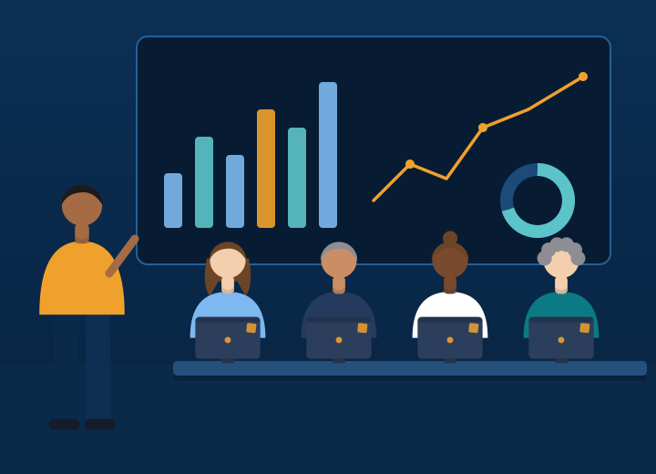

Our mission
To operate our clients’ customer, back-office and data processes with the accuracy, care and transparency they would demand of their own teams.
About Alturis
Alturis runs customer support, back-office and data operations for clients who cannot afford service to slip. Here is who we are, what we believe and how we work.

Company introduction
Alturis is a fictional business process outsourcing company created for this template. Its story shows how a modern BPO presents itself: specific, measurable and human.
We began with a single voice programme in Pune and now operate from six delivery centres. Clients hire us to take on work that is high-volume, rules-based or simply needs to be done well around the clock — and to report on it with complete transparency.
Our mission
To operate our clients’ customer, back-office and data processes with the accuracy, care and transparency they would demand of their own teams.
Our vision
To be the outsourcing partner leaders choose when service quality, security and reliability cannot be compromised.
Our values
Six commitments that shape how we hire, train and run every programme.
We measure ourselves by what happens for our clients’ customers, not by activity.
Bad news travels first. Metrics are shared as they are, with a plan attached.
We fix root causes instead of working around them.
Great service is delivered by people who are trained, heard and recognised.
Small errors compound. We build controls into the work, not around it.
Every process is a candidate for better — including ours.
Company history
Demo timeline
Twenty seats and a single voice programme for a technology client.
Follow-the-sun coverage introduced with a second shift pattern.
Chat and email support join voice as core service lines.
Governed workflows and data-quality services launched.
European clients gain native-language delivery in the region.
Two new centres and a formal business-continuity programme.
More than 3,000 team members worldwide (demo figure).
Leadership team
Illustrative leaders for this template — fictional names and biographies.
Chief Executive Officer
Founded Alturis in 2013 after leading shared-services operations for two global banks.
Chief Operating Officer
Oversees delivery across six centres, with a background in Lean operations and contact-centre design.
Head of Customer Operations
Leads voice, chat and email programmes and the quality culture behind them.
VP, Transition & Solutions
Designs and delivers client transitions — from process discovery to stable operations.
Director, Workforce Planning
Runs forecasting, scheduling and capacity planning for more than 3,000 seats.
Head of Data & Back-Office
Builds governed workflows and data-quality frameworks for regulated clients.
Chief Information Security Officer
Responsible for security, privacy and business continuity across the delivery network.
Chief People Officer
Leads recruitment, learning and career development for our global workforce.
Operational philosophy
We do not treat go-live as the finish line. Every process runs through the same four-step cycle.
Define the process, service levels, risks and success measures with the client.
Run the work with trained teams, documented procedures and clear ownership.
Sample, measure and calibrate against scorecards — daily, weekly and monthly.
Remove root causes, update procedures and share the results with clients.
Quality commitment
Independent quality analysts sample every service line against the client’s own scorecard. Results are calibrated with clients and reported without adjustment.
| Measure | Target | How measured |
|---|---|---|
| Processing accuracy | 99% or higher | Second-review sampling by risk category |
| Interaction quality score | 92% or higher | Weekly evaluations, calibrated fortnightly |
| SLA attainment | 95% or higher | Daily service-level reporting |
| Customer satisfaction | 4.5 / 5 or higher | Post-contact survey |
| Corrective action closure | Within 10 working days | Quarterly internal audit |
Security commitment
Security is designed into the site, the system and the person. Controls are documented, audited and available to clients for review.
Illustrative controls — describe your actual certifications here
Badge-controlled production areas, visitor logging and clean-desk rules. Mobile phones and removable media are restricted where client data is handled.
Least-privilege, role-based access with multi-factor authentication and quarterly access reviews.
Encrypted transfer and storage, data-loss prevention on managed desktops and retention aligned with each client’s policy.
Background checks where permitted, mandatory security and privacy training at onboarding and annually.
Documented response playbooks, tested recovery times and the ability to move work between delivery centres.
Client testimonials
Fictional quotes for demonstration.
Alturis took over our customer support with less disruption than I expected from moving desks within our own building. Service levels stayed on track through the entire transition.
Their reporting is the reason we trust them. We see accuracy, backlog and turnaround daily, in the same terms our finance team uses.
The team improved our product data quality more in three months than we managed in the previous two years.
Meet the leaders who will run your programme and see how we would approach your first ninety days.